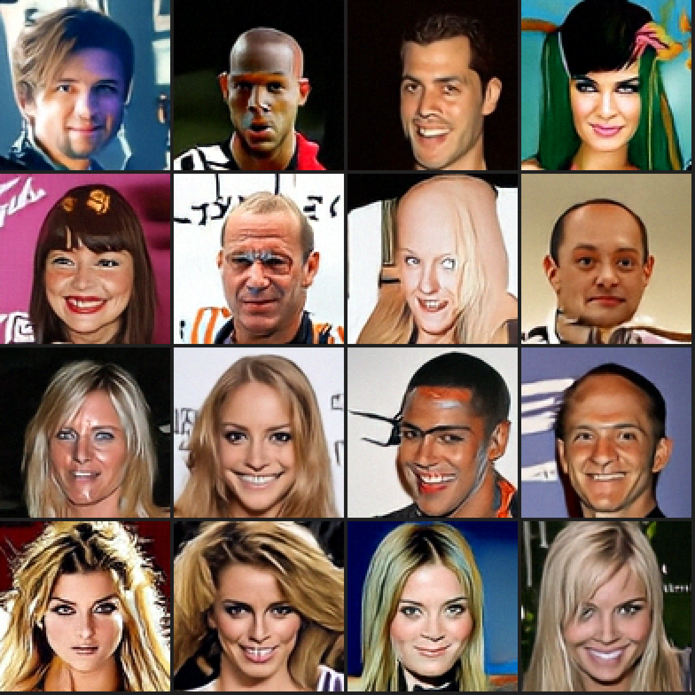

Diffusion Demo - Pixel JiT 与 DiT 人脸生成

Pixel JiT · 当前 96×96 主模型 · 20.480M EMA · Heun50 · seed 2027 · 连续生成前 16 张（未筛选）


一个面向人脸图像生成的可复现实验项目。当前主线使用 Pixel JiT 直接在 48×48 / 96×96 RGB 像素上训练和采样，不经过 VAE/VQVAE；仓库同时保留 VAE/VQVAE + 潜空间 DiT 的完整训练、Web 交互与评估流程。
Pixel JiT 与 SOFY 大 batch 实验
新增 pixel_experiment.py / pixel_ddp_experiment.py，直接在 RGB 像素上训练，不依赖 VAE、VQVAE 或预训练生成权重。主线从 48×48 起步，再继承全部学习参数扩展到 96×96。结构参考本地 cstft_jit、cstft_jit_arc2face 的实验经验：patch=4、clean-image prediction、velocity loss、logit-normal 时间采样、EMA、50 步 Heun。当前小模型为 21.89M 参数，384 宽、8 层，输出端带残差卷积头。
本轮选用的方案
已完成两轮、8 组主实验及采样消融，结果见 实验报告。选用 configs/pixel_ddp_b1024_lr4e4.json：global batch=1024、lr=4e-4、8,000 步 / 819.2 万张次；主模型在 1×16 GPU 上训练循环耗时 6.36 分钟。同结构的弱模型使用 lr=2e-4、2,000 步 / 204.8 万张次，额外约 1.75 分钟。这些时间包含训练循环内采样和保存，不含启动、传输、独立评估。
采样使用 EMA、50 步 Heun、autoguidance=2，只在 t∈[0.1,0.8] 启用弱模型。调参种子上的 FID 从未引导的 57.19 降至 43.98；锁定方案后，独立种子 7777 复核为 57.52 → 44.27（KID 0.04832 → 0.03211）。全程强引导有些配置 FID 更低，但完整网格出现条纹，因此不采用。58.7M 大模型需要约两倍训练时间，引导后的质量也没有超过选中的小模型。
本地已保存主模型、弱模型及可续训完整 checkpoint：runs/pixel_best/{model_ema.pt,guide_ema.pt,last.pt}；配置、SHA256、评估与运行记录见 runs/pixel_best/recipe.json。RTX 2080 SUPER 实际生成的 64 张样本位于 runs/pixel_best/sample_desk_seed2027/，其中 preview16.png 展示连续生成的前 16 张，未筛选。原生分辨率是 48×48，仍有部分畸形或过平滑样本。
# 使用本次已训练好的模型；2080 SUPER 用 FP16，其他加速卡可用 BF16。
PYTHONPATH=src python sample_pixel.py \
--checkpoint runs/pixel_best/model_ema.pt \
--guide-checkpoint runs/pixel_best/guide_ema.pt \
--guidance 2 --guidance-start .1 --guidance-end .8 \
--seed 2027 --count 64 --steps 50 --precision fp16 \
--output runs/my_faces
# 申请 1×16 GPU 后，从零依次训练弱模型、主模型并评估、采样。
bash scripts/train_pixel_recipe.sh /path/to/celeba_48x48_sprites_v2.npy \
/path/to/eval_assets /path/to/new_output
同看图量的首轮实验表明：batch=4096 时 lr 从 2e-4 提高到 8e-4，FID 从 121.76 降至 82.76；batch=8192、lr=8e-4 为 102.50。大 batch 提高吞吐，但必须一起调整学习率，而且更新次数减少会影响质量。当前数据和模型下，batch=1024 的质量/时间折中更好。
后续尚未验证、值得优先尝试：从当前模型降低学习率续训；比较 EMA 时长；用更小的弱模型降低引导开销；更高分辨率和质量的数据。训练中动态改变 batch 也可做对照，但本轮结果还不能证明它有效。
单卡与分布式入口
单卡训练与独立种子采样：
PYTHONPATH=src python pixel_experiment.py \
--config configs/pixel_jit_*.json --output runs/pixel_single
PYTHONPATH=src python sample_pixel.py \
--checkpoint runs/pixel_single/last.pt --output runs/pixel_samples \
--seed 2027 --count 64 --steps 50 --precision bf16
数据使用修复后的 30,000 张缓存，固定划分 29,000 张训练 / 1,000 张验证。sample_pixel.py 保存原生 48×48 PNG、原始数组和随机种子；展示图仅放大，不做修复或超分。2080 SUPER 使用 --precision fp16。完整 checkpoint 支持续跑，EMA-only checkpoint 用于独立采样。
SOFY 每个任务申请 --nodes 1 --gpus-per-node 16 --cpus-per-node 64，执行：
bash scripts/run_*_group.sh configs/pixel_ddp_b4096_lr8e4.json \
/path/to/output /path/to/celeba_48x48_sprites_v2.npy /path/to/eval_assets
第一轮比较 (global_batch, lr)：(1024, 2e-4)、(4096, 2e-4)、(4096, 8e-4)、(8192, 8e-4)。每组看图量 4,096,000；warmup、EMA 和评估间隔均按看图量对齐，避免大 batch 仅因步数不同而获得额外预算。每百万张左右保存固定种子样本和验证损失；输出目录内创建 STOP 可在下一日志点保存并停止。续跑要求相同 world size、batch、学习率及数据；可提高配置中的 max_images 后用 --resume /path/to/last.pt。
evaluate_pixel.py 用独立种子生成 1,024 张，与 1,000 张留出图比较 clean Inception FID / KID；这不是 FID50k，不能直接与论文数值比较。Inception 只用于评估。eval_assets 包含官方 inception-2015-12-05.pt 及 clean-fid 的 Python 包目录 packages/。FID 用 float64 对称 PSD 特征分解，处理样本少于 2,048 维特征时的奇异协方差；KID 的子集标准差不代表置信区间。
2026-10-24 最终速度复测（原始记录：runs/pixel_best/speed_comparison.json）：
| 相同 FP16 工作负载 | 单张加速卡 | RTX 2080 SUPER | 加速比 |
|---|---|---|---|
| 21.89M 模型、batch=32 训练 | 904.0 images/s | 347.6 images/s | 2.60× |
| 16 张、50 步 Heun、未引导采样 | 1.012s | 1.469s | 1.45× |
| 16 张、50 步 Heun、最终区间引导 | 1.641s | 2.628s | 1.60× |
均先预热，再取 3 次中位数；训练每次 40 步。早先 5.37× 的训练倍率受到 desk 上另一计算任务占用的影响，现以上表替换。2080 SUPER 仍有游戏/桌面进程，且两端 PyTorch/驱动不同，因此仍是本次实际运行环境的比较。加速卡可用更大 batch；先前单卡 batch=256、BF16 达到 1,764.4 images/s，但不能与上表 FP16 batch=32 当作严格同条件比较。
从 48×48 继承权重训练 96×96
保持 patch=4、width=384、depth=8、heads=6，可以 严格继承全部 21,891,251 个学习参数：patch 输入卷积、Transformer、时间条件、输出线性层和卷积细化头的形状均不变。96px 的 token 网格从 12×12 增至 24×24；解析 sin/cos 位置编码和 RoPE 不是学习参数，也不在 state-dict 中，按新网格重新生成。
model.position_scale=1 使用新网格的原生坐标；0.5 将坐标步长缩半，用于比较保留低分辨率空间尺度是否有益。使用源模型 EMA 初始化新模型和新 EMA；重置 AdamW、warmup、步数和 EMA 年龄。--init-from 与恢复同一训练的 --resume 互斥，禁止通过 strict=False 静默丢弃不匹配的权重。初始化来源和 SHA256 保存在 initialization.json 及 checkpoint 中。
# 从原始 CelebA ZIP 制作真实 96px 数据，不能用旧 48px cache 放大替代。
python scripts/prepare_celeba96.py \
--zip '/path/to/celeba/archive (1).zip' --output /path/to/celeba96.npy
# 申请一台 16 GPU 后运行；第一轮配置用于迁移对照。
INIT_CHECKPOINT=/path/to/48px/model_ema.pt \
bash scripts/run_*_group.sh configs/pixel96_scaled_lr1e4.json \
/path/to/output96 /path/to/celeba96.npy /path/to/eval_assets
# 独立采样根据 checkpoint 自动选择 96px 尺寸。
PYTHONPATH=src python sample_pixel.py \
--checkpoint /path/to/output96/last.pt --precision bf16 \
--seed 2027 --count 64 --output runs/faces96
新数据由真实 178×218 CelebA JPEG 中心裁切 178×178、Lanczos 下采样至 96×96；固定抽取官方训练分区 30,000 张及验证分区 1,000 张，原图 ID、裁切和哈希随 cache 保存。旧 48px sprites 缺少原图 ID，因此新验证分区是否参与过旧预训练尚不确定；96px FID 也不能与此前 48px FID 直接比较。
patch=4 时 token 数变为 4 倍、注意力矩阵元素数变为 16 倍，整体耗时由实测决定。若改为 patch=8，可保持 144 tokens，但输入卷积核与输出投影维度都会变化，必须另外转换或重新初始化这两部分，不能直接完整加载旧权重。当前先验证保留 patch=4 的迁移。
加速卡版 PyTorch 曾在多进程构造 96px 位置编码的 CPU cos/sin 中触发 SIGSEGV。build_pixel_model 仅在 CPU 构造期间使用单线程，随后恢复正常线程数；保留原张量数学计算，训练仍使用全部已分配的加速卡。
首轮 4 组已完成，每组 16 GPU、新增 1.024M 张次（1000 个更新）：
| 初始化 / 位置坐标 | lr | 96px FID ↓ | 训练循环秒 |
|---|---|---|---|
| 48px EMA / scale=0.5 | 1e-4 | 79.45 | 182.74 |
| 48px EMA / scale=1.0 | 1e-4 | 81.01 | 187.37 |
| 48px EMA / scale=0.5 | 2e-4 | 77.13 | 181.95 |
| 从零 / scale=0.5 | 2e-4 | 167.68 | 181.84 |
这是相同新增 96px 训练预算，继承组还使用了旧 48px 预训练，不是相同总算力比较。位置坐标的较小差异尚无多 seed 证据。原始记录和图见 runs/ 中对应的首轮实验目录；自包含报告为 reports/pixel96_transfer_2026-10-24.html。
96px 加速卡性能分析
参考 air4 的本地加速卡性能项目，已对真实 batch=64、576 tokens、width=384 的完整单卡更新采集 ASight Systems 与独立 PyTorch trace；未更换厂商库。三轮交错、无 profiler 计时：默认 AdamW 152.202 ms/step，fused AdamW 151.741 ms/step，耗时只下降 0.30%。未把这个小收益外推为 DDP 加速。
ASight 基线捕获 2321 个 kernel。按原始名字分组：逐元素/归约/布局 69.513 ms（46.7%），复制/转换 23.026 ms（15.5%），GEMM 30.059 ms（20.2%），attention 20.530 ms（13.8%）；总 kernel 时间 148.881 ms。RMSNorm 被分解到前两类，不能看独立 norm kernel 的占比。时间线覆盖率不等于硬件利用率。
入口 scripts/profile_pixel_suite.py；原始 .asysrep、SQLite、压缩 PyTorch trace 与计时见 runs/profile96_v1/。融合复测为 scripts/profile_pixel_confirm_suite.py、runs/profile96_fusion_v2/；报告为 reports/pixel96_profile_2026-10-24.html。
融合实测完成：保留厂商 GEMM / Flash Attention，用当前加速卡环境中的 Torch Inductor + Triton 融合 RMSNorm、RoPE、SwiGLU 激活、调制与残差。三个独立进程配对：152.170 → 88.476 ms/step，吞吐 1.72×。ASight kernel 数 2321 → 1199。开启 emulate_precision_casts=True，参数、梯度和优化器状态保持 FP32。
在同一个 4.096M checkpoint 上恢复模型/优化器/RNG，每组 16 GPU 再训练 1000 步：稳态中位数 6656 → 11326 张/秒（1.70×）；包含首次编译、保存和预览的循环时间 163.28 → 130.71 秒。FID 70.572 → 70.530，没有跳过更新。短程质量标准已通过，尚无长程多 seed 等价证明。
初始严格数值门槛的失败记录保留：确定性模式下，融合版本仍有约 1% 的梯度差异、5 步后约 0.024% 的参数差异。独立 FP64 autograd 对照中，6 类算子的前后向均通过预先登记的 BF16 容差（输出相对 L2 <0.6%、梯度 <2%，实际最大约0.37%）。因此该路径需显式启用：configs/pixel96_scaled_lr2e4_fused.json 中的 execution_backend=compile_pointwise；默认仍为 eager。切换执行后端保留 checkpoint 权重、优化器与 RNG，但运算舍入可能改变。
16 rank 共用 CPFS 编译缓存曾报 Stale file handle，已将缓存放到节点本地 /tmp/pixel_jit_compile/<run-hash>/rankN/。首次编译成本计入上面的 DDP 循环时间，稳态吞吐另列。
8.192M 阶段的 96px 模型和采样
优胜配置在继承 48px EMA 后累计完成 8.192M 张次 96px 训练，原生 96px FID 从首轮 77.13 降至 68.69。使用同一训练过程的 256k 早期 EMA 作弱模型，guidance=3、时间区间 [0.1,0.8]、Heun50：筛选 seed3333 的 FID 60.064；独立 seed7777 从无引导 69.303 → 59.407。这些是 1024 张生成图 / 1000 张验证图的小样本比较。
最终主模型、弱模型、可续训完整 checkpoint 和原生 96px PNG 保存在 runs/pixel96_best/。sample_*_seed2027/preview16.png 为连续生成的前16张，完整64张和原始数组同时保存，无筛选、超分或人脸修复。最终交付模型来自完整 eager 主训练；融合版本的 16 GPU 对照单独保存在对应实验目录和集群同名目录。
PYTHONPATH=src python sample_pixel.py \
--checkpoint runs/pixel96_best/model_ema.pt \
--guide-checkpoint runs/pixel96_best/guide_ema.pt \
--guidance 3 --guidance-start 0.1 --guidance-end 0.8 \
--precision bf16 --steps 50 --seed 2027 --count 64 \
--output runs/faces96_reproduced
2080 SUPER 使用 --precision fp16。模型加载默认执行普通 PyTorch 算子，不要求 Triton 或特定加速后端。完整迁移、采样及吞吐结果见 reports/pixel96_transfer_2026-10-24.html 与 reports/pixel96_profile_2026-10-24.html。
96px 继续训练
configs/pixel96_extend16m_lr2e4.json 与 pixel96_extend16m_lr1e4.json 从同一 8.192M 完整 checkpoint 续训到 16.384M，每组 16 GPU、global batch 1024，启用已经短程验证的 compile_pointwise。每新增 2.048M 保存 EMA、完整续训状态、固定噪声验证误差和 64 张预览。
普通 --resume 仍严格检查学习率。需要在保留 AdamW 动量、EMA、随机数状态和累计进度的同时调整学习率，必须显式添加 --allow-resume-lr-change；组启动脚本对应 ALLOW_RESUME_LR_CHANGE=1。变化和父 checkpoint 会写入 continuation.json 及完整 checkpoint，不重新 warmup。
ALLOW_RESUME_LR_CHANGE=1 bash scripts/run_*_group.sh \
configs/pixel96_extend16m_lr1e4.json /path/to/longer96 \
/path/to/celeba96.npy /path/to/eval_assets /path/to/8m/last.pt
scripts/evaluate_pixel_continuation.py 用固定 manifest 比较不可变的中间 EMA，评估任务独立申请一组 16 GPU。相同弱模型、guidance、Heun 步数及噪声 seed 的对照可区分训练收益和采样参数变化。旧 runs/pixel96_best/ 保留为 8.192M 基线；更长训练的产物使用独立目录。
充分续训结果：2e-4、1e-4 两条路线，以及从 16.384M 的 1e-4 分支降到 5e-5 的收尾路线，均完成 24.576M 张次。末段部分指标回升，最终选用 20.480M 的 1e-4 EMA，而非最后一步。guidance=3、同一 256k guide、区间 [0.1,0.8]、Heun50 均保持不变：选择 seed3333 的 FID 60.064 → 57.133；确认 seed7777 的 FID 59.407 → 55.563，未引导 FID 69.303 → 65.275。这是相同 1,024/1,000 张的小样本比较；确认仅使用另一组噪声，仍是同一验证数据。
新产物在 runs/pixel96_further/：model_ema.pt 为选中的 20.480M EMA；last.pt 是该分支 24.576M 的完整优化器/RNG续训状态，两者训练步数不同，不能把它当成 20.480M 的精确续训状态。guide_ema.pt 与旧方案相同。recipe.json 保存选择依据、确认指标、继承关系和文件 SHA256，sample_*_seed2027/ 保存连续 64 张原生 PNG 和原始数组。对照曲线和全部已测方案见 reports/pixel96_continuation_2026-10-24.html。
PYTHONPATH=src python sample_pixel.py \
--checkpoint runs/pixel96_further/model_ema.pt \
--guide-checkpoint runs/pixel96_further/guide_ema.pt \
--guidance 3 --guidance-start 0.1 --guidance-end 0.8 \
--steps 50 --seed 2027 --count 64 --precision bf16 \
--output runs/faces96_further_reproduced
实验优化与 desk GPU 运行
推荐从可复现的命令行实验入口开始，Web 端也使用同一套 src/diffusion_demo/core 训练代码。
2026-10-24 的 RTX 2080 SUPER 实测见 完整报告（含原始指标与图片）。同一数据/种子下，8 轮 VAE 验证 PSNR 18.36 → 19.08 dB，MSE 降低 15.3%；16 张图的 1000 步 DDPM / 50 步 DDIM 分别为 4.14s / 0.193s。不同采样器不保证相同质量，当前生成脸部细节仍模糊。
pip install -e .
python experiment.py --config configs/desk_smoke.json --output runs/my_smoke
python experiment.py --config configs/desk_baseline.json --output runs/my_baseline
python experiment.py --config configs/desk_recommended.json --output runs/my_experiment
desk_smoke.json 跑通 VAE → DiT → 采样；desk_baseline.json 与推荐配置的 VAE 使用相同数据、划分和种子，只比较 KL 权重/预热方案。推荐配置适用于实测的 RTX 2080 SUPER 8GB：VAE batch=16、自动选择 FP16，DiT hidden=128/depth=4/patch=1、batch=64、FP32。小模型上混合精度不一定更快，请运行下面的 benchmark 验证。
本机直接 SSH 不通而 tmux 能连时：
tmux new-session -d -s diffusion-experiment \
'cd /Users/zsc/Downloads/diffusion_demo2 && scripts/run_desk.sh configs/desk_recommended.json'
tmux attach -t diffusion-experiment
脚本将代码同步到 desk:/home/zsc/Downloads/diffusion_demo2_codex，使用已有 py312 环境，完成后把本次结果复制回本地 runs/。地址和解释器路径可在 scripts/run_desk.sh 修改；不会安装或升级远端共享环境。每次运行新建输出目录，实验入口拒绝覆盖已有目录。
每个实验保存 environment.json（含源文件 SHA256）、config.json 和 result.json；VAE/DiT 各自保存：
split.json：选中图像的数据 SHA256、训练/验证索引。metrics.json：逐轮训练损失、验证指标和耗时。reconstruction_*.png/samples_*.png：固定验证图片、固定随机种子的可视化。checkpoints/last.pth：结构、模型、优化器、AMP scaler 及扩散配置；VAE 另保存验证重建最好的best.pth。这些是保存点，当前未提供训练续跑入口。
注意：复制回来的 result.json 保留远端原始路径；本地采样时把模型路径改成对应本地 runs/<run>/...。
python scripts/benchmark_dit.py \
--vae runs/my_experiment/vae/checkpoints/best.pth \
--dit runs/my_experiment/dit/checkpoints/last.pth \
--output runs/my_benchmark
python -m unittest discover -s tests -v
# 可选：生成包含曲线、重建图与采样图的独立 HTML 报告
pip install -e '.[report]'
python scripts/report_experiment.py \
--baseline runs/my_baseline --candidate runs/my_experiment \
--benchmark runs/my_benchmark --output reports/my_experiment.html
本次修复了：BF16 输入与 FP32 权重冲突、TensorBoard 批量图像维度错误、VAE/DiT latent 默认维度冲突、采样忽略训练噪声调度，以及 sprite sheet 每行仅解析 100 列导致漏掉一半图像的问题。新版按实际宽度读取 200 列、30,000 张图，使用 cache/celeba_48x48_sprites_v2.npy，旧缓存保留用于追溯。旧 raw state-dict VAE checkpoint 仍可加载；新的 DiT checkpoint 会自动读取结构、schedule、EMA 和 latent 标准化参数。
DiT 默认缓存 posterior 的均值/方差，每个 batch 重新采样；标准化统计量只从训练集计算。预览用 50 步 DDIM，不改变训练的 1000 步噪声调度。sampling_steps=null 可用完整 DDPM。旧的 DiT GAN 分支没有有效的梯度链路，现显式报错，避免把它误当成有效实验；VAE/VQVAE 的 GAN 分支仍支持。
验证重建 MSE/PSNR 使用 [0,1] 像素范围、VAE posterior mean；DiT 验证噪声固定。降低 KL 的对照关注重建质量，不能单凭训练总 loss 或噪声 MSE 断言生成质量更好。当前是按图片随机划分，并非按人物身份划分。
实现参考：PyTorch AMP、SDPA、DDIM。
📋 目录
- 特性
- 模型架构
- VAE (变分自编码器)
- VQVAE (向量量化变分自编码器)
- DiT (扩散 Transformer)
- DDPM (去噪扩散概率模型)
- 数学符号速查
- 安装
- 使用方法
- 项目结构
- API 文档
✨ 特性
- 🎨 完整的图像生成流程: 数据预览 → VAE 训练 → DiT 训练 → 图像采样
- 🌐 Web 界面: 基于 Flask 的交互式界面，支持实时训练监控
- 📊 指标追踪: 完整的训练指标记录和可视化报告
- 🖼️ 中间结果可视化: 训练过程中生成图像和重建对比
- 🔄 Job 系统: 后台任务管理，支持任务队列和状态追踪
- ⚡ 高效实现: 支持 BF16 混合精度、CUDA 加速
🧠 模型架构
VAE (变分自编码器)
VAE 通过编码器将图像压缩到潜在空间，再通过解码器重建图像。
网络结构
输入图像 (3×48×48)
↓
[编码器]
Conv2d(3→128, 4×4, stride=2) → 24×24
ResBlock(128)
Conv2d(128→256, 4×4, stride=2) → 12×12
ResBlock(256)
Conv2d(256→latent_dim, 3×3) → 4×4
↓
潜在变量 z (latent_dim×4×4)
↓
[重参数化技巧]
z = μ + σ·ε, ε ~ N(0, I)
↓
[解码器]
ConvTranspose2d(latent_dim→256, 4×4, stride=2) → 8×8
ResBlock(256)
ConvTranspose2d(256→128, 4×4, stride=2) → 16×16
ResBlock(128)
ConvTranspose2d(128→128, 4×4, stride=2) → 32×32
Interpolate(48×48)
Conv2d(128→3, 3×3) → 48×48
↓
重建图像 (3×48×48)
损失函数
VAE 的损失函数由两部分组成：
$$ \mathcal{L}_{\text{VAE}} = \mathcal{L}_{\text{recon}} + \beta \cdot \mathcal{L}_{\text{KL}} $$
重建损失 (MSE):
$$ \mathcal{L}_{\text{recon}} = \frac{1}{N} \sum_{i=1}^{N} |x_i - \hat{x}_i|^2 $$
KL 散度 (正则化项):
$$ \mathcal{L}_{\text{KL}} = -\frac{1}{2} \sum_{j=1}^{d} \left(1 + \log(\sigma_j^2) - \mu_j^2 - \sigma_j^2\right) $$
其中：
- $x_i$ 是原始图像
- $\hat{x}_i$ 是重建图像
- $\mu_j, \sigma_j$ 是潜在变量的均值和标准差
- $\beta$ 是 KL 权重系数 (默认 1.0)
VQVAE (向量量化变分自编码器)
VQVAE 通过离散化的潜在空间学习更有意义的表示。
网络结构
输入图像 (3×48×48)
↓
[编码器]
Conv2d(3→128, 4×4, stride=2) → 24×24
Conv2d(128→64, 4×4, stride=2) → 12×12
Conv2d(64→embedding_dim, 3×3) → 4×4 (通过 Adaptive Pooling)
↓
连续潜在变量 z_e (embedding_dim×4×4)
↓
[向量量化层]
查找最近邻嵌入: z_q = e_k, 其中 k = argmin_j ||z_e - e_j||
↓
离散潜在变量 z_q (embedding_dim×4×4)
↓
[解码器]
与 VAE 解码器类似，但输出为量化后的潜在变量
↓
重建图像 (3×48×48)
损失函数
VQVAE 的损失函数包含三部分：
$$ \mathcal{L}_{\text{VQVAE}} = \mathcal{L}_{\text{recon}} + \beta \cdot \mathcal{L}_{\text{VQ}} + \gamma \cdot \mathcal{L}_{\text{commit}} $$
VQ 损失:
$$ \mathcal{L}_{\text{VQ}} = |z_e - \text{sg}[z_q]|^2 $$
承诺损失:
$$ \mathcal{L}_{\text{commit}} = \beta \cdot |\text{sg}[z_e] - z_q|^2 $$
其中：
- $z_e$ 是编码器输出的连续潜在变量
- $z_q$ 是量化后的离散潜在变量
- $\text{sg}[\cdot]$ 是停止梯度操作 (stop-gradient)
- $\beta$ 是承诺成本 (默认 0.25)
DiT (扩散 Transformer)
DiT 将扩散模型中的 U-Net 替换为 Transformer 架构，在潜在空间进行去噪。
网络结构
输入: 带噪潜在变量 x_t (latent_channels×4×4), 时间步 t
↓
[Patch Embedding]
将 4×4 图像划分为 2×2 的 patches → 4 个 patches
每个 patch 投影到 hidden_size 维度
↓
[位置编码] + 可学习的 positional embedding
↓
[Transformer Blocks] × depth (默认 6 层)
- 多头自注意力 (Multi-Head Self-Attention)
- AdaLN (Adaptive Layer Norm): 根据时间步和类别条件调制
- FFN (Feed-Forward Network)
↓
[输出层]
LayerNorm + Linear → 预测噪声 ε_θ(x_t, t)
↓
输出: 预测的噪声 (latent_channels×4×4)
AdaLN (自适应层归一化)
每个 Transformer 块使用 AdaLN 进行条件调制：
$$ \text{AdaLN}(x, c) = x \cdot (1 + \gamma(c)) + \beta(c) $$
其中 $c$ 是时间步和类别条件的嵌入向量，$\gamma$ 和 $\beta$ 是通过 MLP 从 $c$ 学习得到的缩放和偏置参数。
DDPM (去噪扩散概率模型)
DDPM 定义了前向加噪和反向去噪两个马尔可夫链过程。
前向扩散过程
从原始数据 $x_0$ 逐渐添加高斯噪声，经过 $T$ 步后变成纯噪声：
$$ q(x_t | x_{t-1}) = \mathcal{N}(x_t; \sqrt{1-\beta_t} x_{t-1}, \beta_t I) $$
利用重参数化技巧，可以直接采样任意时间步 $t$ 的状态：
$$ x_t = \sqrt{\bar{\alpha}_t} x_0 + \sqrt{1-\bar{\alpha}_t} \epsilon, \quad \epsilon \sim \mathcal{N}(0, I) $$
其中：
- $\alpha_t = 1 - \beta_t$
- $\bar{\alpha}_t = \prod_{s=1}^{t} \alpha_s$
- $\beta_t$ 是噪声调度 (线性或余弦调度)
反向去噪过程
学习一个神经网络 $\epsilon_\theta$ 来预测噪声，从而从 $x_t$ 恢复 $x_{t-1}$：
$$ p_\theta(x_{t-1} | x_t) = \mathcal{N}(x_{t-1}; \mu_\theta(x_t, t), \sigma_t^2 I) $$
其中均值预测为：
$$ \mu_\theta(x_t, t) = \frac{1}{\sqrt{\alpha_t}} \left( x_t - \frac{\beta_t}{\sqrt{1-\bar{\alpha}_t}} \epsilon_\theta(x_t, t) \right) $$
训练目标
简化后的训练目标是预测添加到 $x_0$ 的噪声：
$$ \mathcal{L}_{\text{DDPM}} = \mathbb{E}_{x_0, t, \epsilon \sim \mathcal{N}(0,I)} \left[ |\epsilon - \epsilon_\theta(x_t, t)|^2 \right] $$
采样算法
从标准正态分布采样 x_T ~ N(0, I)
对于 t = T, T-1, ..., 1:
z ~ N(0, I) if t > 1, else z = 0
ε_θ = model(x_t, t) # 预测噪声
x_{t-1} = (x_t - β_t·ε_θ/√(1-ᾱ_t)) / √α_t + σ_t·z
返回 x_0
📐 数学符号速查
| 符号 | 含义 |
|---|---|
| $x_0$ | 原始图像 |
| $x_t$ | 时间步 $t$ 的带噪图像 |
| $z, z_e, z_q$ | 潜在变量 (连续/量化前/量化后) |
| $\mu, \sigma$ | 潜在变量的均值和标准差 |
| $\epsilon, \epsilon_\theta$ | 真实噪声和模型预测的噪声 |
| $\beta_t$ | 时间步 $t$ 的噪声方差 |
| $\alpha_t = 1 - \beta_t$ | 保留率 |
| $\bar{\alpha}_t = \prod_{s=1}^t \alpha_s$ | 累积保留率 |
| $T$ | 总扩散时间步 (通常 1000) |
| $d$ | 潜在空间维度 |
| $N$ | 批量大小 |
🚀 安装
环境要求
- Python >= 3.9
- PyTorch >= 2.3
- CUDA (可选，但推荐用于训练)
安装步骤
# 克隆项目
git clone <repository-url>
cd diffusion_demo2
# 安装依赖
pip install -r requirements.txt
# 或者安装为可编辑包
pip install -e .
依赖列表
flask>=2.0.0
torch>=2.3.0
torchvision>=0.18.0
pillow>=9.0.0
numpy>=1.21.0
requests>=2.25.0
tqdm>=4.60.0
tensorboard>=2.10.0
einops>=0.6.0
🎯 使用方法
Web 界面 (推荐)
启动 Web 服务器：
python -m diffusion_demo.server
访问 http://127.0.0.1:5000，你将看到：
- Dataset 标签: 下载和预览 CelebA 48×48 数据集
- Train VAE/VQVAE 标签: 训练变分自编码器
- Train DiT 标签: 训练扩散 Transformer
- Sample 标签: 使用训练好的模型生成图像
- Jobs 标签: 查看训练任务历史和日志
命令行训练
进行快速 VAE 训练并生成可视化报告：
python cmdline_train.py \
--model vae \
--epochs 30 \
--batch-size 64 \
--data-limit 30000 \
--lr 0.001
参数说明：
--model: 模型类型 (vae或vqvae)--epochs: 训练轮数--batch-size: 批量大小--data-limit: 使用数据量 (最大 30000)--lr: 学习率--bf16: 启用 BF16 混合精度
训练完成后会生成：
runs/cmdline_<timestamp>/final_model.pth: 训练好的模型runs/cmdline_<timestamp>/report.html: 包含图表和生成图像的可视化报告
环境变量
| 变量 | 默认值 | 说明 |
|---|---|---|
PORT |
5000 | Web 服务器端口 |
HOST |
127.0.0.1 | 服务器主机 |
DEVICE |
auto | 计算设备 (auto/cuda/cpu) |
DATA_LIMIT_DEFAULT |
2048 | 默认数据限制 |
📁 项目结构
diffusion_demo2/
├── CLAUDE.md # 原始 SPEC 文档
├── README.md # 本文件
├── requirements.txt # Python 依赖
├── pyproject.toml # 包配置
├── cmdline_train.py # 命令行训练脚本
│
├── src/diffusion_demo/ # 主包
│ ├── server.py # Flask 服务器入口
│ ├── api.py # REST API 路由
│ ├── jobs.py # 任务管理系统
│ │
│ ├── core/ # 核心功能
│ │ ├── data_loader.py # CelebA 数据加载
│ │ ├── models/ # 模型定义
│ │ │ ├── vae.py # VAE/VQVAE/判别器
│ │ │ └── dit.py # DiT 模型
│ │ └── training/ # 训练逻辑
│ │ ├── train_vae.py # VAE 训练
│ │ └── train_dit.py # DiT 训练和采样
│ │
│ ├── ui/ # Web 界面
│ │ ├── templates/
│ │ │ └── index.html # 主页面
│ │ └── static/
│ │ ├── style.css # 样式
│ │ └── app.js # 前端逻辑
│ │
│ └── utils/ # 工具函数
│ ├── io.py # I/O 操作
│ └── torch_env.py # PyTorch 环境
│
├── cache/ # 数据集缓存
├── checkpoints/ # 模型检查点
├── runs/ # TensorBoard 日志
├── results/ # 生成样本
└── var/jobs/ # 任务元数据
🔌 API 文档
系统信息
GET /api/system
返回 PyTorch 版本、CUDA 可用性、数据集缓存状态等信息。
数据集操作
POST /api/dataset/ensure # 下载并缓存数据集
GET /api/dataset/samples?count=16&seed=0 # 获取随机样本
任务管理
GET /api/jobs?type=vae&limit=50 # 列出任务
GET /api/jobs/<job_id> # 获取任务详情
GET /api/jobs/<job_id>/log?offset=0 # 获取任务日志
POST /api/jobs/<job_id>/cancel # 取消任务
训练接口
POST /api/jobs/vae # 启动 VAE/VQVAE 训练
POST /api/jobs/dit # 启动 DiT 训练
POST /api/jobs/sample # 启动图像采样
检查点管理
GET /api/checkpoints # 列出可用检查点
🎓 参考文献
-
VAE: Kingma, D. P., & Welling, M. (2013). Auto-Encoding Variational Bayes. arXiv preprint arXiv:1312.6114.
-
VQVAE: van den Oord, A., et al. (2017). Neural Discrete Representation Learning. NeurIPS.
-
DDPM: Ho, J., Jain, A., & Abbeel, P. (2020). Denoising Diffusion Probabilistic Models. NeurIPS.
-
DiT: Peebles, W., & Xie, S. (2023). Scalable Diffusion Models with Transformers. ICCV.
📄 License
MIT License
用 ❤️ 和 PyTorch 构建